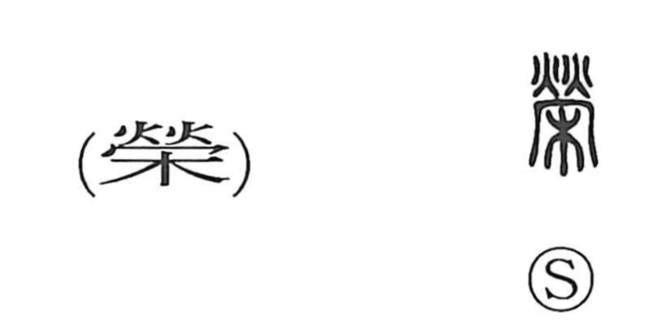

栄

Kun: sakae, sakaeru, hae, haeru | On: ei
glory ・ prosperity ・ to flourish ・ to prosper ・ to shine
Explanation
Shirakawa interprets 栄 (traditional 榮) as a picto‑phonetic character. In early forms it depicts a kagaribi—a night watch or signal bonfire blazing for protection—whose vivid flames supply the meaning. From this image of a fiercely burning guard fire arose senses such as “to shine” and “to lend brilliance,” which then broadened to “to thrive, to prosper,” and, when applied to people and achievements, to “honor,” “fame,” and “glory.” The element read ei provides the on reading, while the depiction of the bonfire anchors the semantic core.